11 Studi Kasus 1
12 Studi Kasus 1 : Program Pengelola Data Karyawan
Studi kasus kali ini juga tersedia dalam bentuk video yang bisa di tonton pada tautan berikut.
13 Pemrograman Dart
Kali ini kita akan belajar bahasa pemrograman Dart. Bahasa pemrograman yang akan digunakan di framework Flutter.
Flutter merupakan framework yang digunakan untuk membuat aplikasi mobile multiplatform baik android maupun IOS.
13.1 Tujuan Pembelajaran Dart
Harapan setelah menyelesaikan studi kasus ini, teman-teman akan lebih mudah memahamai syntax yang digunakan pada flutter ketika membuat aplikasi untuk pemrograman mobile baik android maupun IOS.
14 Materi Pembelajaran
Materi yang akan dipelajari pada tutorial ini ada beberapa materi, meliputi:
- Dart Object Oriented Programming (OOP)
- Abstract, meliputi class, inheritance
- Tipe data, enum, dan dynamic
- Nullable dan Not Nullable variabel
- Formal dan ptional named parameter
- String Interpolation
- Getter & Setter
- Arrow Function
- Collection dengan List & Map
- Tambah depedency String formating Internationalization
Sebelum memulai tutorial, terdapat beberapa hal yang perlu diperhatikan dan dipahami terlebih dahulu,
Untuk mengikuti tutorial ini, sudah menguasai dasar pemrograman. Jika belum menguasai dasar pemrograman, bisa membaca tutorial tentang pemrograman apapun, kemudian mempelajari dasar OOP. Tidak harus ahli di bidang OOP minimal tau dasar-dasar class, object, inheritance, dan sebagainya.
Kemudian contoh yang kita buat tutorial ini dibuat murni untuk mengenal fitur dart. Didalam satu class akan ada banyak fitur dart yang kita manfaatkan untuk class tersebut, meskipun sebenarnya tidak harus menggunakan fitur tersebut. Sehingga jika di rasa contoh yang diberikan terlalu overdesign, cukup dipahami sebagai referensi ketika membuat aplikasi menggunakan dart/flutter.
Untuk lebih memahami cara pemrograman dengan Dart, ketika menonton tutorial ini, sebaiknya praktikkan langsung agar anda dapat merasakan dan mengatasi eror yang mungkin muncul.
14.1 Create Project
Dari create project terlebih dahulu, sebenarnya kalau kita memulai pemrograman dart, tidak harus membuat project, kita bisa membuat text file dan kita save dengan format dart, misalkan latihan.dart, kita save dan buat fungsi main dan jalankan.
Direkomendasikan saat memulai pemrograman dart, baik itu dart saja atau menggunakan flutter, kita mulai dari membuat project, karena nantinya bisa memudahkan untuk memasukkan depedency library-library tambahan yang dibutuhkan untuk pemrograman dart.
Cara membuat project, menggunakan terminal atau command prompt, dengan mengetik perintah dart create namaproject.
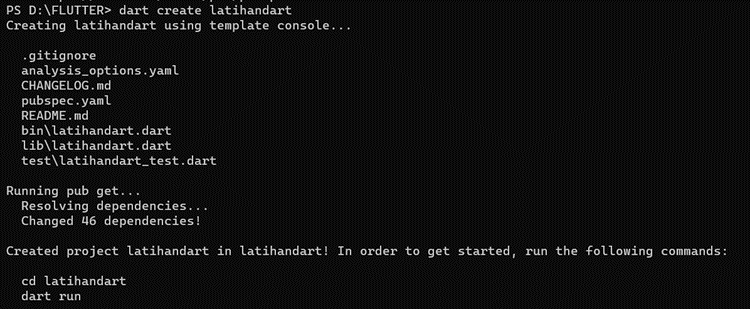
atau kalau kita menggunakan Visual Studio Code, bisa menggunakan shortcut Ctrl+Shift+P, pilih new dart project, kita menggunakan console application, kita pilih folder atau direktori tempat kita membuat projectnya, kemudian ketik nama project dart kita. Kalau kita menggunakan new dart project / create dart, kita akan mendapatkan beberapa direktori dan file, yang penting dalam direktori kita adalah pubspec.yaml, untuk menambahan dependency yang dibutuhkan.
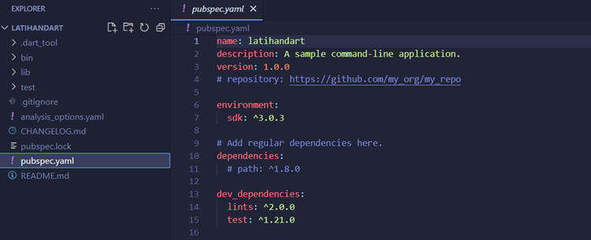
Dasar pemrograman Dart mirip dengan pemrograman yang lain dalam penerapan variabel, kondisi, iterasi, dan sebagainya.
14.2 Program Dart
Kita akan membuat program dart.
- Tambahkan variabel
nilai = 90 - Selanjutnya, buat kondisi
if nilai > 80maka tambahkan print lulus dan else maka tambahkan print tidak lulus. Jalankan dan debugging akan mengeluarkan hasil lulus karena variabel nilai yang sudah kita buat bernilai 90 dan kondisi nilai > 80 terpenuhi maka akan mengeluarkan output lulus.
void main() {
int nilai = 90;
if (nilai > 80) {
print('Lulus');
} else {
print('Tidak Lulus');
}
} 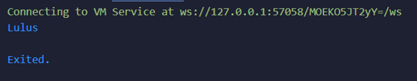
Untuk bagian perulangan, sama dengan bahasa pemrograman lain. Bisa menggunakan for, while, do while.
void main() {
int nilai = 90;
if (nilai > 80) {
print('Lulus');
} else {
print('Tidak Lulus');
}
for (int i = 0; i < 10; i++) {
print("cetakan ke ${i + 1}");
}
}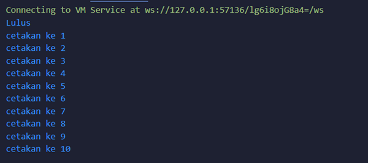
14.3 Konsep Object Oriented Programming (OOP)
14.3.1 Membuat Class Karyawan
- Masuk ke konsep OOP, langkah pertama adalah membuat class baru yang disebut
Karyawan. Untuk melakukannya, kita perlu membuat file baru dengan namakaryawan.dart.
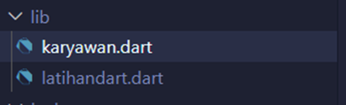
Dalam class Karyawan, kita akan menentukan beberapa atribut.
Pertama, kita memiliki atribut npp dan nama yang harus memiliki nilai (not nullable), sehingga kita harus memberikan nilai awal. Jika kita ingin menambahkan atribut yang bisa bernilai null, kita perlu menambahkan tanda ? setelah tipe data atribut tersebut. Misalnya, jika kita ingin menambahkan atribut alamat yang bisa bernilai null, maka kita akan mendefinisikannya sebagai String alamat?. Dengan cara ini, atribut alamat memiliki sifat nullable atau boleh bernilai null. Konsep ini yang mungkin tidak ada pada bahasa pemrograman seperti C++ ataupun Java yaitu Not Nullable dan Nullable
class Karyawan {
String npp; //not nullable
String nama;
String? alamat; //nullable
}- Tambahkan string
thnMasukdan int_gaji.
Atribut yang kita buat sudah ada semua. Kalau kita sudah install dart plugin, setiap kita save akan otomatis melakukan reformating sesuai dengan ketentuan rekomendasi formating dart.
class Karyawan {
String npp = ""; //not nullable
String nama = "";
String? alamat; //nullable
int thnMasuk;
int _gaji;
}- Biar
nppdannamatidak eror, kita berikan default value pada constructor.
Mirip dengan java, membuat constructor pada dart, kita membuat method yang namanya sama persis dengan nama class.
Buat constructor Karyawan kemudian kita masukkan this.npp, this.nama, alamat tidak kita masukkan karena sifatnya nullable jadi nanti kita isi lewat atribut assesment.
Tambahkan {} named parameter pada thnMasuk dibuat opsional dengan memberikan default value. Masih ada eror karena ada atribut _gaji yang seharusnya diisikan karena not nullable, kita juga bisa memberikan default value dengan angka 2900000.
class Karyawan {
String npp; //not nullable
String nama;
String? alamat; //nullable
int thnMasuk;
int _gaji = 2900000;
Karyawan(this.npp, this.nama, {this.thnMasuk = 2015}); //constructor
}Kita sudah punya class tidak ada eror. Ada atribut, ada method, dan atribut yang not nullable sudah kita buat.
- Selanjutnya, tambahkan method.
Buat method presensi. Lita menggunakan tipe data yang beda, menggunakan tipe data DateTime yang merupakan tipe data objek bawaan dari dart, kita beri dengan nama jamMasuk. Tambahkan kondisi jika jamMasuk.hour > 8, maka kita menganggap terlambat.
Kita gunakan string interpolation, mirip seperti C++/python, kita awali dengan $ dan memberikan nama variabel.
void presensi(DateTime jamMasuk) {
if (jamMasuk.hour > 8) {
print("$nama Datang terlambat");
} else {
print("$nama datang tepat waktu");
}
}- Tambahkan method deskripsi tipe data
Stringdengan namadeksripsi, tambahkan Stringteks.
Mirip seperti python, kalau kita mau menggunakan multiline string, kita bisa memberikan tanda petik 3 kali nanti tutup dengan petik 3 kali juga.
String deskripsi() {
String teks = """===================
""";
return teks;
}- Isi tulisan di String
teksyang akan ditampilkan nanti dengan menggunakan string interpolation untuk memanggilnpp,nama,_gaji. Kita tidak melakukan print terhadapdeskripsi, tapi kita melakukan return terhadapteks.
String deskripsi() {
String teks = """===================
NPP: $npp
Nama: $nama
Gaji:$_gaji
""";
return teks;
}Untuk menggunakan getter dan setter dalam Dart, Anda dapat membuat metode tambahan dengan cara yang sedikit berbeda dari pendekatan OOP Java. Dalam Dart, getter dan setter memiliki fitur unik, di mana pemanggilannya tampak seolah-olah Anda mengakses atribut, bukan memanggil metode.
- Buat getter dengan nama
tunjangan. Untuk membuat gettertunjangandalam Dart, Anda hanya perlu menuliskanint get tunjangantanpa menggunakan tanda kurung (). Di Dart, ketika Anda memanggiltunjangan, itu seolah-olah Anda mengakses variabel atau atribut, bukan memanggil fungsi atau metode. Selain itu, Anda dapat menambahkan kondisi: jika tahun kerja kurang dari 5, makatunjangansebesar 500000, dan jika lebih dari 5 tahun, makatunjangansebesar 1000000.
int get tunjangan {
if ((2023 - thnMasuk) < 5) {
return 50000;
} else {
return 100000;
}
}Kita tidak perlu menggunakan kondisi seperti pada umumnya, kita bisa menggunakan kondisi yang lebih simpel sesuai dengan kodingan yang tersedia. Kita bisa menggunakan arrow function tanpa menggunakan {} dan lebih simpel dari yang sebelumnya.
int get tunjangan => ((2023 - thnMasuk) < 5) ? 50000 : 100000;Jadi sudah cukup banyak fitur dart yang kita manfaatkan. Ada not nullable dan nullable, ada optional named parameter, ada string interpolation, ada setter dan arrow function.
- Kita membuat getter untuk gaji dengan nama
int get gajiyang menggunakan arrow function yang berisigaji + tunjangan. Disini kita menggunakantunjangan, memanggil variabel dengan getter
int get gaji => (_gaji + tunjangan);- Buat setter dengan nama
void set gajidan tidak menggunakan arrow function.
Kalau kita set gaji dibawah nilai yang sudah ada, maka akan otomatis default ke nilai yang sebelumnya yaitu 2900000.
Buat kondisi: gaji dibawah UMR, kita buat constanta di luar class dengan nama constanta UMR dengan nilai 290000, dan di atribut gaji di dalam class Karyawan, kita ubah nilai dari atribut gaji dengan variabel const UMR.
const UMR = 2900000;
abstract class Karyawan {
String npp; //not nullable
String nama;
String? alamat; //nullable
int thnMasuk;
int _gaji = 2900000;
}- Kita update kondisi pada
set gaji. Jika gaji kurang dari UMR, maka kita set menggunakan this.gaji = UMR dan tidak boleh dibawah UMR. Ada tanda biru diperingatkan, seperti java, merefer ke atribut dan atributnya tidak ada nama variabel yang sama, kita tidak harus menggunakan this, langsung tanpa menggunakan this, tetapi kalau ada nama variabel yang sama maka bisa menggunakan this supaya tidak bertabrakan dengan variabel lain. Tambahkan variabel di void set gaji, yaitu int gaji, dan masukkan pada kondisi else _gaji = gaji. Setter tidak perlu return jadi void bisa dihapus.
set gaji(int gaji) {
if (gaji < UMR) {
_gaji = UMR;
print("Gaji tidak boleh dibawah UMR");
} else {
_gaji = gaji;
}
}Constructor pada dart sedikit berbeda dengan constructor yang terdapat di Java. Kalau di java constructor ada parameter bisa menggunakan this.nama=nama, kalau di dart parameter langsung merujuk pada atribut jadi bisa lebih singkat.
Karyawan(this.npp, this.nama, {this.thnMasuk = 2015}); //constructor14.4 Pemanggilan Class Karyawan di Fungsi Main
Selanjutnya, kita akan memanggil class Karyawan di fungsi main.
- Pindah ke halaman main, panggil class
Karyawan, langsung auto complete dan autoimport karyawan.dart, kemudian masukkan parameter yang wajib pada classkaryawanyaitunppdannama, set parameterthnMasukjuga, dan jika parameter tidak di set, maka akan otomatis mengambil nilai default.
import 'karyawan.dart';
void main(List<String> arguments) {
Karyawan staff1 = Karyawan("A123", "Lars Bak");
Karyawan staff2 = Karyawan("B123", "Kasper Lund", thnMasuk: 2016);
Karyawan staff3 = Karyawan("C123", "Denis Ritchie", thnMasuk: 2020);
}- Kita panggil method yang sudah kita buat, yaitu method
presensi, dengan cara pemanggilannya adalahstaff1.presensi, cara membuat tipe dataDatetimeadalahDateTime(now)tetapi kita akan membuat spesifikasi jam dan tanggal maka tambahkan parse dengan formatstring yyyy-mm-dd 00:00:00.
staff1.presensi(DateTime.parse('2023-08-08 07:00:00'));
staff2.presensi(DateTime.parse('2023-08-08 09:01:01'));
staff3.presensi(DateTime.parse('2023-08-08 08:30:00'));- Panggil method yang lain, yaitu set gaji dengan pemanggilan
staff2.gajidan isi nilai sesuai dengan keinginan kita.
Meskipun setternya method, kita posisikan sebagai setter kita gunakan seolah kita memanggil atribut.
staff2.gaji = 50000;
staff3.gaji = 500000;- Kemudian kita panggil method
deskripsiuntuk menampilkan deskripsi dari masing-masing staf.
print(staff1.deskripsi());
print(staff2.deskripsi());
print(staff3.deskripsi());- Tambahkan kondisi pada method
deskripsi. Jika kondisi alamat tidak null maka alamat=$alamat, sehingga jika kita tambahkan method alamat, maka staf yang menuliskan alamat akan keluar output alamatnya dan jika tidak menuliskan alamat maka tidak akan muncul alamat pada output.
String deskripsi() {
String teks = """===================
NPP: $npp
Nama: $nama
Gaji:$_gaji
""";
if (alamat != null) {
teks += "Alamat: $alamat";
}
return teks;
}Output atau hasil dari program yang telah dibuat di atas adalah sebagai berikut:
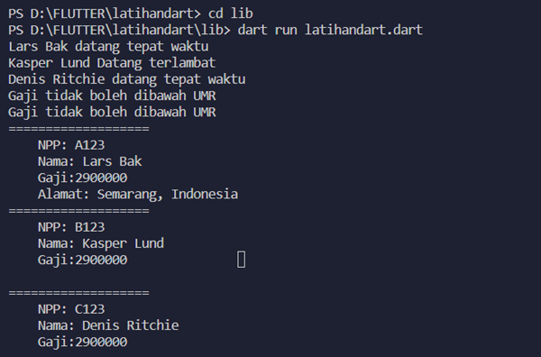
14.5 Refactor Class Karyawan Menjadi Super Class dan Sub Class
- Buat class baru dengan nama class
Pejabat, jadi classPejabatini adalah bagian dari classKaryawantetapi yang memiliki jabatan. Karena classpejabatakan banyak kesamaan dengankaryawan. Kita akan melakukan extends.
class Pejabat extends Karyawan {}- Kita membuat refactor, class
karyawanjadi super class, dan yang bawahnya menjadi sub class, kita membuat 2 subclass yaituclass stafBiasa extends Karyawan, danclass pejabat extends Karyawan.
class StafBiasa extends Karyawan {} // subclass
class Pejabat extends Karyawan {} // subclassAda beberapa method yang sifatnya berbeda dan harus didefinisikan secara berbeda, ada yang sama, ada juga yang berbeda misal presensi antar staf biasa dan pejabat berbeda, kita bedakan presensi masuk staf biasa dan pejabat.
- Buat class
Karyawanmenjadi class abstract
abstract class Karyawan {
String npp; //not nullable
String nama;
String? alamat; //nullable
int thnMasuk;
int _gaji = 2900000;
}- Dan kita membuat presensi menjadi abstract method.
kalau di java kita membuat abstarct method kita harus menambahkan abstract di depan. Jika di dart, kita cukup menhapus kondisi dan kita ganti dengan ; dan otomatis menjadi abstract method.
void presensi(DateTime jamMasuk);Tunjangan StafBiasa dengan Pejabat berbeda, tunjangan pada StafBiasa berdasarkan tahun masuk, sedangkan tunjangan pada Pejabat berdasarkan jabatan, kita buat tunjangan sebagai abstract class.
Class Karyawan akan menjadi superclass, Class StafBiasa akan menjadi sub class, dan Class Pejabat akan menjadi sub class.
Superclass
abstract class Karyawan {...} //superclassSubclass
class StafBiasa extends Karyawan {...} //subclassclass Pejabat extends Karyawan {...} //subclassMethod abstract: method presensi, dan method get tunjangan. Kedua ini akan menjadi method abstract, yang artinya method abstact ini harus di implementasikan di extends classnya yaitu di class stafbiasa dan staff pejabat.
- Kita lihat pada sub class akan terdapat eror karena kita harus mengimplementasikan 2 method abstract, kita bisa klik tombol kuning sebelah kiri dan kita pilih create 2 missing override dan otomatis akan muncul dua method abstract.
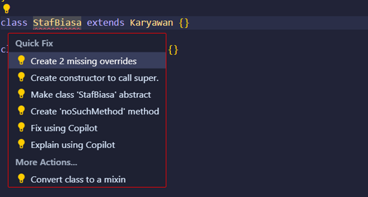
Syntax akan menjadi seperti ini:
class StafBiasa extends Karyawan {
@override
void presensi(DateTime jamMasuk) {
// TODO: implement presensi
}
@override
// TODO: implement tunjangan
int get tunjangan => throw UnimplementedError();
}- Dan kita harus mengimplementasikan constructornya juga, pilih Create constructor to call super.
Syntax akan menjadi seperti ini:
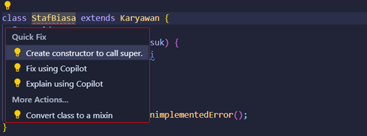
class StafBiasa extends Karyawan {
StafBiasa(super.npp, super.nama);
@override
void presensi(DateTime jamMasuk) {
// TODO: implement presensi
}
@override
// TODO: implement tunjangan
int get tunjangan => throw UnimplementedError();
}- Di dalam
constructorhanya adanppdannama, kita tambahkan named parameterthnMasukke dalam constructor di sub class,
class StafBiasa extends Karyawan {
StafBiasa(super.npp, super.nama, {thnMasuk = 2015});
@override
void presensi(DateTime jamMasuk) {
// TODO: implement presensi
}
@override
// TODO: implement tunjangan
int get tunjangan => throw UnimplementedError();
}- Tambahkan kondisi pada method
presensiyang sudah dibuat ke dalam abstract method.
@override
void presensi(DateTime jamMasuk) {
if (jamMasuk.hour > 8) {
print("$nama Datang terlambat");
} else {
print("$nama datang tepat waktu");
}
}- Tunjangan kita buat arrow function di abstract method tunjangan.
@override
// TODO: implement tunjangan
int get tunjangan => ((2023 - thnMasuk) < 5) ? 50000 : 100000;Menunjukkan kedua method ini override dari class Karyawan. Sebenarnya bebas menggunakan override atau tidak, tetapi itu untuk menunjukkan bahwa class tersebut menggunakan method override dari class karyawan.
Syntax dari class StafBiasa akan menjadi seperti ini:
class StafBiasa extends Karyawan {
StafBiasa(super.npp, super.nama, {thnMasuk = 2015});
@override
void presensi(DateTime jamMasuk) {
if (jamMasuk.hour > 8) {
print("$nama Datang terlambat");
} else {
print("$nama datang tepat waktu");
}
}
@override
// TODO: implement tunjangan
int get tunjangan => ((2023 - thnMasuk) < 5) ? 50000 : 100000;
}- Pastikan codingan benar dan tidak error. Buka
karyawan.dartdan ganti abstractKaryawanmenjadiStafBiasa.
Karyawan yang di depan tidak perlu diganti menjadi StafBiasa karena kita tidak memanggil method atau atribut khusus yang hanya ada di StafBiasa. Cukup menggunakan Karyawan saja, karena dia merupakan superclass, hampir sama dengan aturan di java seperti inheritance dan polymorphisme.
void main(List<String> arguments) {
Karyawan staff1 = StafBiasa("A123", "Lars Bak");
Karyawan staff2 = StafBiasa("B123", "Kasper Lund", thnMasuk: 2016);
Karyawan staff3 = StafBiasa("C123", "Denis Ritchie", thnMasuk: 2020);
//...
}- Setelah itu kita jalankan kembali program yang sudah kita modifikasi.
Jika hasilnya tetap sama dengan sebelumnya, maka sudah benar. Jika kita melakukan refactor, seharusnya secara logic dalam pemanggilannya akan tetap sama, hanya strukturnya yang berbeda. Beberapa implementasi method sudah kita taruh di atas, sehingga codingan pada class StafBiasa akan relatif lebih sedikit.
14.6 Buat Class Pejabat
- Sekarang kita buat class baru yaitu
Pejabatextends dari classKaryawan. Akan terjadi error, karena kita belum implement 2 method dan constructor barunya. Lalu, tambahkan lagi constructor yang kurang yaitucall super.
class Pejabat extends Karyawan {
Pejabat(super.npp, super.nama);
@override
void presensi(DateTime jamMasuk) {
// TODO: implement presensi
}
@override
// TODO: implement tunjangan
int get tunjangan => throw UnimplementedError();
}- Agar class pejabat terlihat perbedaan, tambahkan variabel
TipeJabatanyang bertipe dataenum. Isilah variable tersebut, misalnya{kabag, manajer, direktur}. Dengan tipe dataenum, kita hanya bisa memasukkan 3 tipe jabatan, yaitukabag,manajer, dandirektur.
enum TipeJabatan {kabag, manajer, direktur};- Lalu, taruh
TipeJabatantadi ke dalam classPejabatdan dalam super constructornya. Jika ingin mengubahthnMasuk, tinggal set menggunakan atribut setter.
Penggunaan This khusus untuk variabel yang ada di dalam class pejabat, sedangkan super berarti yang diwarisi dari extendnya yaitu class Karyawan.
class Pejabat extends Karyawan {
TipeJabatan jabatan;
Pejabat(super.npp, super.nama, this.jabatan);
//...
}- Sekarang kita implementasi 2 method. Untuk
presensiyang ini ditujukan untuk boss, jadi untukjamMasukkita set lebih siang dibanding denganStafBiasa. Untuk methodtunjanganjuga diimplementasikan berdasarkanjabatan, sehingga tidak bisa menggunakan arrow, karena akan lebih kompleks.
@override
void presensi(DateTime jamMasuk) {
if (jamMasuk.hour > 10) {
print("$nama pada ${dateFormat.format(jamMasuk)} datang terlambat");
} else {
print("$nama pada ${dateFormat.format(jamMasuk)} datang tepat waktu");
}
}
@override
int get tunjangan {
if (jabatan == TipeJabatan.kabag) {
return 1500000;
} else if (jabatan == TipeJabatan.manajer) {
return 2500000;
} else {
return 5000000;
}
}Kita telah mendefinisikan atribut baru yaitu jabatan. Kemudian kita juga telah override presensi dan tunjangan karena aturannya sudah beda dan mengimplementasinya dari abstract. Deskripsinya juga harusnya diubah.
- Sekarang kita melakukan override terhadap
deskripsi. Meskipundeskripsiini bukan merupakan method abstract. Kali ini, kita akan memanggil method yang sudah ada daripada mendefinisikan method baru.
@override
String deskripsi(){
String teks = super.deskripsi();
teks += "Jabatan : $jabatan";
return teks;
}14.7 List of Karyawan
- Jika kita menggunakan cara seperti ini, maka akan sangat repot jika jumlah stafnya sangat banyak. Kita bisa menggunakan
list. List jika di Java sepertiArray List. Sifatnyalistini tidak statis ukurannya dan dapat bertambah. Kita akan buatList<Karyawan>dan menggunakanadddaridataKaryawan.
void main(List<String> arguments) {
List<Karyawan> dataKaryawan = [];
dataKaryawan.add(Pejabat("A123", "Lars Bak", TipeJabatan.direktur));
dataKaryawan.add(Pejabat("B123", "Kasper Lund", TipeJabatan.manajer));
dataKaryawan[1].thnMasuk = 2016;
dataKaryawan.add(StafBiasa("C123", "Denis Rithcie", thnMasuk: 2020));
dataKaryawan[0].presensi(DateTime.parse('2023-08-08 07:00:00'));
dataKaryawan[1].presensi(DateTime.parse('2023-08-08 09:01:01'));
dataKaryawan[2].presensi(DateTime.parse('2023-08-08 08:30:00'));
dataKaryawan[1].gaji = 50000;
dataKaryawan[2].gaji = 500000;
dataKaryawan[0].alamat = "Semarang, Indonesia";
//...
}Jika di Java, ini merupakan kombinasi dari Array List dan Array biasa. Ini lebih simple jika kita menggunakan inheritance begitu yang kita jadikan List itu adalah Super classnya maka kita bisa memasukkan datanya baik itu Pejabat maupun StafBiasa.
- Karena isinya sama semua, kita bisa menggunakan
For injika di Dart atau sama denganFor eachjika di Java.
for (var staff in dataKaryawan) {
print(staff.deskripsi());
}Setelah itu, kita jalankan kembali program yang sudah kita update.
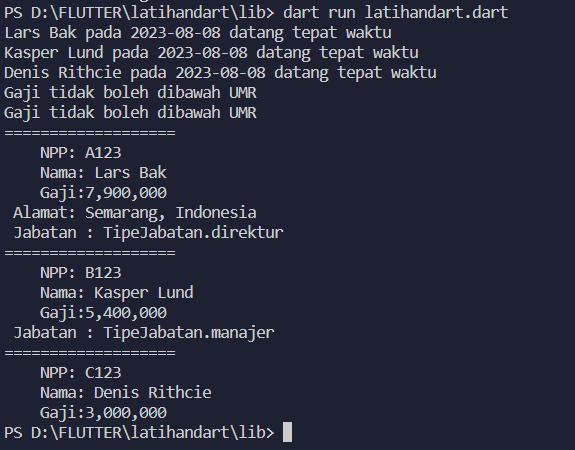
- Terlihat bug pada bagian jabatan. Jika kita menggunakan variabel sederhana, kita cukup menggunakan
$untuk pemanggilannya. Tetapi, jika variabelnya sudah kompleks seperti melibatkan pemanggilan atribut atau terdapat logika tambahan, makaString interpolationnya setelah$kita masukkan ke dalam{}. Itu merupakan sebuah aturan jika menggunakan bahasa Dart.
teks += "\n Jabatan : ${jabatan.name}"; - Jadi, di class
Karyawanini kita telah menambahkan sub class untuk Pejabat, ada atribut tambahan dan override dari method yang sudah ada. Ini akan kita banyak lakukan nanti misalkan ketika melakukan sub class dariStatelessdanStatefullwidget itu yang bisa kita override atau tambahkan atribut baru.
14.8 String Formatting
- Sebagai tambahan, kita akan merapikan bagian gajinya yaitu number formattingnya dan menambahkan tanggal kedatangan karyawan. Number formatting atau Get formatting bisa kita dapatkan dari library
internationalization. Cara menambahkannya yaitu buka filepubspec.yamldan tambahkan librarynya pada dependencies.
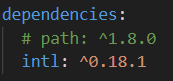
Setelah ditambahkan, Visual Studio Code akan segera mendownload library tersebut jika terhubung dengan koneksi internet. Maka, kita bisa import library internationalization pada karyawan.dart.
- Setelah itu, kita buat variabel baru untuk menyimpan number format dan date format pada
karyawan.dart.
var numFormat = NumberFormat("#,000");
var dateFormat = DateFormat('yyyy-MM-dd');- Setelah memiliki variabel number format, kita bisa panggil ke dalam gaji.
Gaji:${numFormat.format(gaji)}"""; - Kemudian kita panggil date format pada method presensi yang ada pada class
StafBiasadanPejabat.
class StafBiasa extends Karyawan {
StafBiasa(super.npp, super.nama, {thnMasuk = 2015});
@override
void presensi(DateTime jamMasuk) {
if (jamMasuk.hour > 8) {
print("$nama pada ${dateFormat.format(jamMasuk)} datang terlambat");
} else {
print("$nama pada ${dateFormat.format(jamMasuk)} datang tepat waktu");
}
}
//...
}class Pejabat extends Karyawan {
TipeJabatan jabatan;
Pejabat(super.npp, super.nama, this.jabatan);
@override
void presensi(DateTime jamMasuk) {
if (jamMasuk.hour > 10) {
print("$nama pada ${dateFormat.format(jamMasuk)} datang terlambat");
} else {
print("$nama pada ${dateFormat.format(jamMasuk)} datang tepat waktu");
}
}
//...
}Sebenarnya bisa langsung memanggil date format hanya dengan variabel jamMasuk, tetapi date format defaultnya terdapat jam, menit, dan detik juga. Jika tidak ingin sepanjang itu, kita menggunakan date format yang ada pada library internationalization. Tampak tadi di awal, kita menggunakan create project with dart dan bukan new file dart. Karena jika langsung membuat file dart, akan susah import sebuah package dari luar.
14.9 List of Map
- Sekarang, kita akan simulasi studi kasus menggunakan
Map. Buatlah data dummy terlebih dahulu menggunakanMap.
List<Map<String, dynamic>> dummyData() {
List<Map<String, dynamic>> data = [
{
"npp": "A123",
"nama": "Lars Bak",
"thn_masuk": 2017,
"jabatan": TipeJabatan.direktur,
"alamat": "Semarang Indonesia"
},
{
"npp": "A345",
"nama": "Kasper Lund",
"thn_masuk": 2018,
"jabatan": TipeJabatan.manajer,
"alamat": "Semarang Indonesia"
},
{"npp": "B231", "nama": "Guido Van Rossum", "alamat": "California Amerika"},
{
"npp": "B355",
"nama": "Rasmus Lerdorf",
"thn_masuk": 2015,
"alamat": "Bandung Indonesia"
},
{
"npp": "B355",
"nama": "Dennis MacAlistair Ritchie",
"jabatan": TipeJabatan.kabag,
"alamat": "Semarang Indonesia"
}
];
return data;
}Kita menggunakan List of Map karena tipe data tersebut sering digunakan untuk mengambil data dari database atau restful service. Map itu seperti Dictionary jika pada Python, keynya berupa String dan valuenya dapat bermacam-macam. Pada kasus ini, kita definisikan valuenya menggunakan tipe data dynamic karena kita belum bisa menentukan tipe datanya. Sehingga, Dart akan menentukan tipe data yang paling cocok untuk digunakan jika kita menggunakan dynamic.
- Setelah itu, kita buat fungsi baru untuk
GETdata dummy yang telah dibuat tadi. Dan masukkanFor eachpada fungsi tersebut.
List<Karyawan> genData(var listData) {
List<Karyawan> data = [];
for (var dtPegawai in listData) {
Karyawan pegawai;
if (dtPegawai.containsKey('jabatan')) {
pegawai =
Pejabat(dtPegawai['npp'], dtPegawai['nama'], dtPegawai['jabatan']);
} else {
pegawai = StafBiasa(dtPegawai['npp'], dtPegawai['nama']);
}
if (dtPegawai.containsKey('thn_masuk')) {
pegawai.thnMasuk = dtPegawai['thn_masuk'];
}
if (dtPegawai.containsKey('alamat')) {
pegawai.alamat = dtPegawai['alamat'];
}
data.add(pegawai);
}
return data;
}Jika kita sudah bisa menentukan tipe data, sebaiknya jangan menggunakan tipe data dynamic. Jika kita menggunakan dynamic compilernya akan berjalan lebih lama karena dia harus menyimpulkan tipe data yang terbaik untuk digunakan. Selain itu, kita akan kehilangan fitur auto complete yang ada di editor.
- Jika sudah, hapus
dataKaryawanyang lama pada fungsi main dan panggil fungsi baru yaitugenDatadi dalam fungsi main dan mengaambil dummy data.
void main(List<String> arguments) {
List<Karyawan> dataKaryawan = genData(dummyData());
//...
}- Setelah itu, kita jalankan kembali program yang sudah kita update.
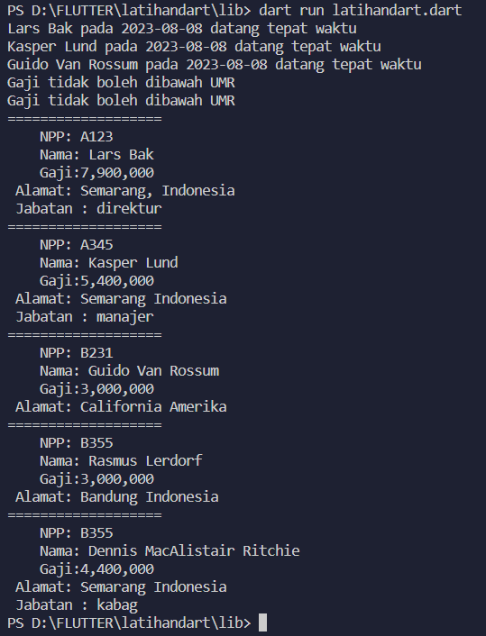